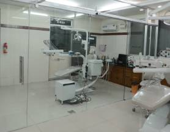
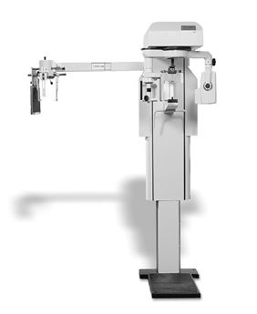

Facilities
Our modern purpose-built centre has all the latest hi-tech equipment needed to provide you the highest quality care.
Covering over 7,500 sq feet, we have both outpatient and inpatient facilities with all the needed imaging modalities under one roof. There is no need to go anywhere else for X-rays etc.
State of the art dental operating suites
- Modern state of the art dental operating suites
- Fully computerised and well maintained clinical records
- Strict sterilisation protocols with disposables used throughout
- Sterile individual cassette-based instrument packs
- Cryosurgery facility is available
- All treatment is done only by highly trained postgraduate Consultants in Endodontics, Prosthodontics, Orthodontics and Maxillofacial Surgery — providing the best clinical outcomes for you and your family
- Well trained and friendly nursing staff


Every imaging modality under one roof
- Fully digitalised AERB approved DR based Orthopantomogram and Cephalogram facility (full mouth X-ray) with digital film printer
- Digital intraoral AERB approved X-ray (RVG) facility
- Digital intraoral and extra-oral video and still imaging facility
- Patient education software in English, Tamil, Malayalam, Hindi and six other regional Indian languages to allow you to fully understand your treatment plan
- Protection against radiation for patients and doctors using lead screens, aprons and thyroid collars is regularly done — meeting and exceeding the Indian Clinical Establishments code as laid down by AERB
Fully equipped modern operating theatre
Our theatre has the latest LED theatre lights, multi-parameter monitors with capnography, surgical diathermy with underwater cutting, anaesthesia workstations with ventilator facility, defibrillators and AED, syringe and infusion pumps. All of this modern equipment allows the anaesthetist and surgeon to do continuous low pressure monitoring and maintenance during surgery (hypotensive anaesthesia), thus safely reducing blood loss and possible need for blood transfusions during long complex surgeries.
- All our rooms are spacious individual rooms with air-conditioning facilities. All rooms have proper post-operative monitoring systems in place for a safe recovery
- Fully qualified nurses and doctors are on call 24 hours / 365 days
- Full range of maxillofacial surgery is done including facial trauma — simple and complex, clefts, craniofacial surgery including craniosynostosis and syndromic deformity correction, orthognathic facial deformity corrective surgery, TMJ surgery, benign and malignant tumours (resection and reconstruction), facial and dental implants, cosmetic (rhinoplasty, genioplasty — chin, and bat ear correction) and routine dentoalveolar surgery
- Facial deformity correction remains our main focus of attention and all our cases are done as per international norms with pre and post surgical orthodontics, face bow transfer with SAM articulators allowing proper model surgery. Stryker / Leibinger titanium plating systems are available with us. Stay in the hospital is minimised due to meticulous planning, proper surgical technique and excellent post-operative care
Ready to talk to a specialist?
We are located 2 minutes’ walk from the Anna Bus Stand, with adequate off-street car parking.